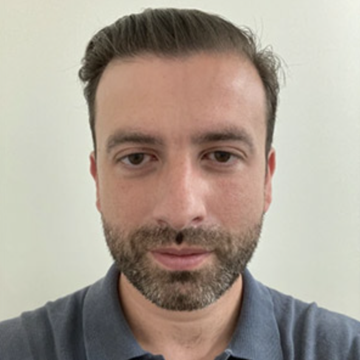
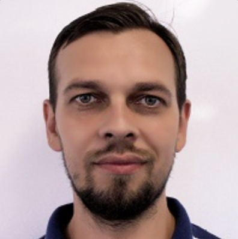
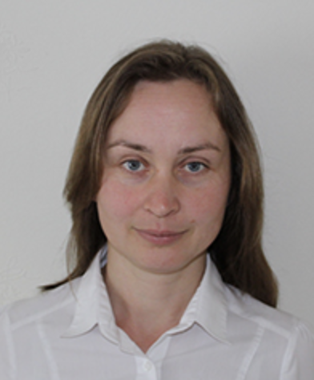
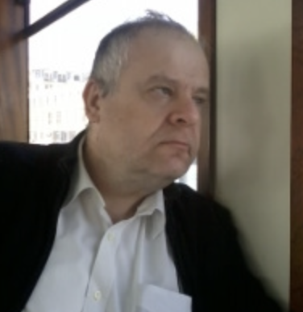
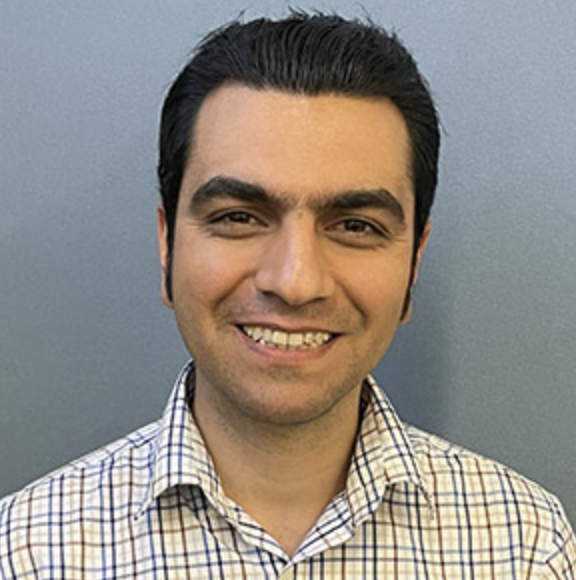
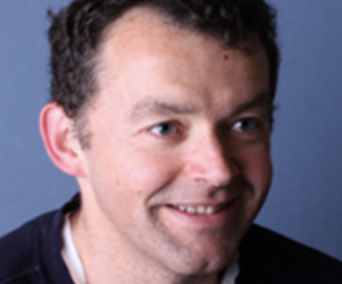

Local Organising Committee

Mike Nieves

Danila Prikazchikov

Ludmila Prikazchikova

Julius Kaplunov

Amir Khodadadian

Jonathan Healey
BAMC Mailing List
To receive announcements about BAMC 2027, future BAMC meetings and related activities, please subscribe to the BAMC mailing list:
Contact
For general enquiries regarding BAMC 2027 please contact: bamc2027@keele.ac.uk